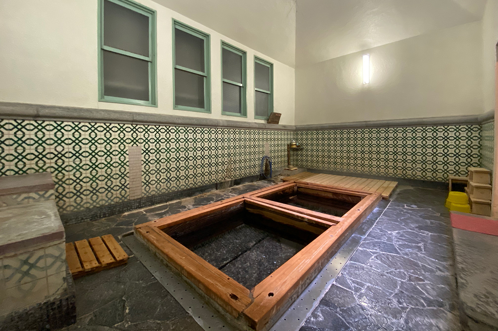
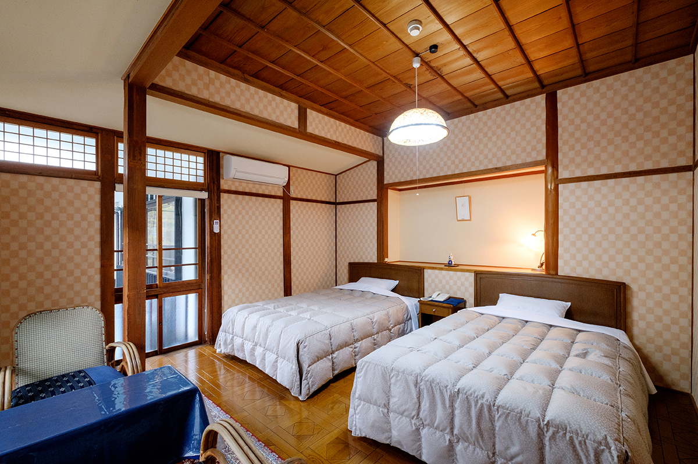
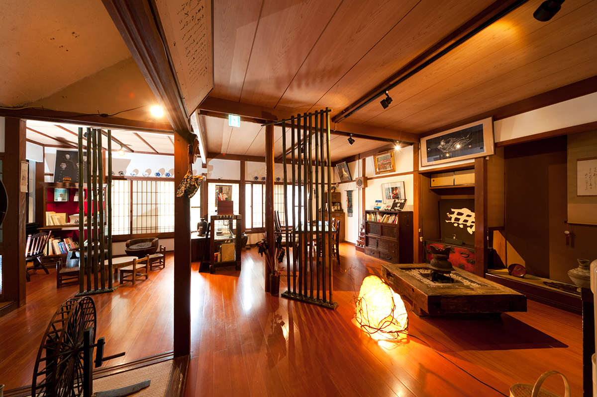
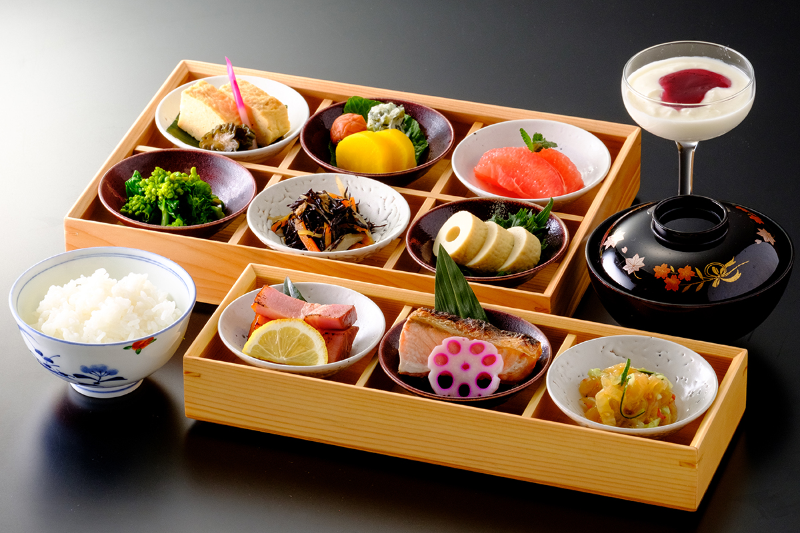

Префектура Тоттори · Мисаса · онсэн
Онсэн Мисаса: один из самых радоновых источников мира

Есть онсэны, после которых кожа становится мягче, и есть такие, что действуют изнутри, на желудок и иммунитет. Профессор, который изучает японские источники больше 40 лет, выбрал среди любимых онсэн Мисаса в префектуре Тоттори: его вода считается одной из самых богатых радоном в мире.
Легенда
Три утра до выздоровления
Название Мисаса можно прочитать как «три утра». По местному преданию, к утру третьего дня болезнь проходит, отсюда и имя курорта. Мисаса это большой онсэн, но и сегодня здесь бросается в глаза, сколько рёканов рассчитано на тодзи, долгое лечение водой, и сколько домов с собственной кухней для тех, кто живёт неделями. Даже крупные отели принимают таких гостей. Возможно, дело в том, что медицинский центр университетской больницы Окаямы, работавший в Мисасе, всерьёз занимался лечением источниками.
Сам профессор давно любит общественную баню «Кабую». Её перестроили, но в новом здании по-прежнему есть место, где воду из источника можно пить. По его словам, такой питьевой источник показывает, насколько местные жители уважают свой онсэн. О том, что даже один глоток оживляет работу слизистой желудка, профессор, как он признаётся, узнал именно из данных того самого медицинского центра.
Радон
Пить, купаться и дышать

Мисасу называют одним из самых радоновых источников мира. Радон появляется при распаде радия и даёт слабое излучение. Считается, что оно мягко подстёгивает клетки, ускоряет обмен веществ и укрепляет иммунитет и способность организма восстанавливаться самому. Радон это газ, и чтобы он попал в тело, в Мисасе воду не только пьют и принимают ванны. Здесь развивают и радоновые паровые процедуры, когда горячим воздухом с радоном просто дышат.
Где жить
Рёкан «Кия»
Для ночлега рекомендуем рёкан «Кия». Его открыли в 1868 году, а здание внесено в государственный реестр материального культурного наследия. Тепло и красота деревянного дома, по мнению профессора, лучше всего подходят для тодзи, ради которого сюда едут восстанавливать тело и душу.
Хозяин рёкана рано стал думать о «профилактическом отдыхе» и знает лечение водой Мисасы как профессионал, так что у него можно узнать, как правильно принимать ванны. Вода в рёкане слаборадиоактивная, натриево-хлоридная, и источник проточный: вода идёт в купальни без повторного использования, её температура на выходе около 56–80 °C. Номер с двухразовым питанием стоил от 17 750 иен с налогом, сервисным сбором и курортным налогом в 2024 году. В рёкане есть кухня, прачечная и Wi-Fi.


Рёкан «Кия»
- Адрес
- префектура Тоттори, уезд Тохаку, Мисаса, Мисаса, 895
- Телефон
- +81 858-43-0521
- Цены / Вход
- от 17 750 иен с ночёвкой и двухразовым питанием (налог, сервисный сбор и курортный налог включены)
- Заезд / выезд
- 15:00 / 10:00